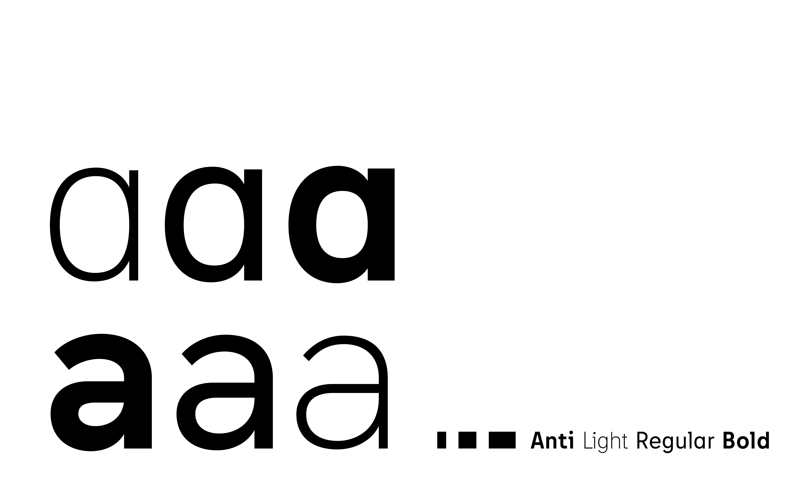

Anti
Anti is your friendly neighborhoud typeface. Being very intrigued by grotesque designs, signs and letterings I combined different characteristics I found throughout my research to create a new, unique but still familiar look and feel. Having the right amount of personality it is perfect for headlines while at the same time being a sturdy companion for body text as well. It’s currently a work in progress looking at an extension of the glyph set to support as many languages using the latin alphabet as possible.

Mauris eu fringilla urna. Sed sed sodales augue. Phasellus pharetra pretium erat. Vestibulum laoreet at ex at fermentum. Pellentesque lobortis, justo a sollicitudin facilisis, nulla orci scelerisque felis, nec consequat nibh neque id leo. Nullam vulputate viverra arcu, nec accumsan libero tempus a. Vivamus laoreet ut dolor ac sodales. Interdum et malesuada fames ac ante ipsum primis in faucibus. Ut porta pulvinar ultricies.